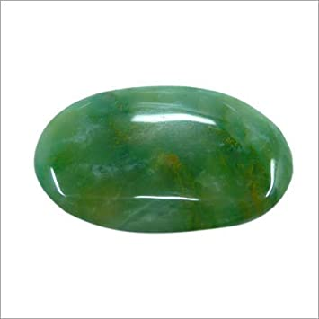

Jade Nephrite
Information
Nephrite-Jade is commonly located in Russia, New Zealand, China, Thailand, and Canada. Other localities for Nephrite-Jade are Australia, Mexico, Taiwan, Brazil, Poland, Zimbabwe, Italy, Switzerland, and Germany.
Nephrite-Jade will bring its wearer protection, luck, and good health. It's a stone of abundance, and itcan improve your circumstances in life, especially your finances. This stone will help good fortune to flow abundantly and naturally into your life, which is why it's often used as a good luck talisman. Jade also has calming and soothing properties, it eliminates fear, comforts and calls for benevolence. Then, it helps the heart to find compassion to make the right decisions, balances emotions, and gives modest and clear ideas.
Health Benefits
You can find here some Healing Properties.
Outfits